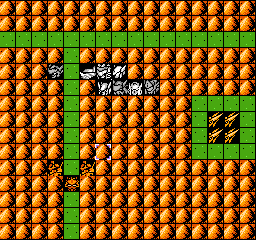

第七关
本关要全杀的话，前面的基础一定要打好。右下角一群在13回合会出击，出击的时候BOSS会恢复成满血，小兵不知，没试过，阿拉德的狂怒125精神就在这个时候派上用处了，至少要打200以上，才可以保障全歼。14回合之内要结束战斗。
给古铁吃个飞行，这个不知道是不是吃早了，反正留着存档，再说吧。
全军向下，弓天使放到左上角怒风的射程内，反击一次。

母舰就一个任务，一直向下，尽量输出把2个陆地近程打死，陆地远程打残，然后弓天使就放在左边，任务很重，需要击破被打残的远程，还有3个走过来的陆地远程通过地形扯开距离，各个击破，这时候她可以双击其中的两个，最后一个贴身攻击也能SL不掉血，这个比较难了，要多练习几次，需要通过山的地形，让速度慢走进来，射程远的绕远路，多试几次。
其他人跟着母舰向下并向右，不要停顿，隆盛除了必要的一次吸引火力，要马不停蹄向右赶。
以上都不要用精神，精神是要留着对付右下角的。
隆盛站在最外围两个敌人的5格射程上，反击输出。阿拉德和莱站在6格的位置上白打。
外围两个击破后，莱向下走到铁三角左下那一角的6格射程上，主动攻击加被动反击，务必打死，血不用留多，后面要用精神补的。隆盛的血也不用留多，够挨铁三角一下攻击即可。
13回合BOSS出来，9格射程，妖精算好位置用闪避反击一次，情义加给莱，回母舰蹲着。莱热血打一下，隆盛给莱加个友情，这样莱就不会被铁三角一下打死。
古铁上个防御去打BOSS，母舰情义加给古铁。阿拉德狂怒，务必打到BOSS
200血以上。隆盛近程热血收掉BOSS。白骑士热血干掉一个铁三角，此时，右下角的敌人也只剩下一个了，14回合击破即可。
本关最难就在3个陆地远程要靠弓天使走位拉扯开全部击破，实在做不到也就算了。右下角清除外围的时候，还有最后一个怒风会比较麻烦点，多试几次就好了，其实BOSS倒简单了。
打完这个平均等级14，隆盛19.